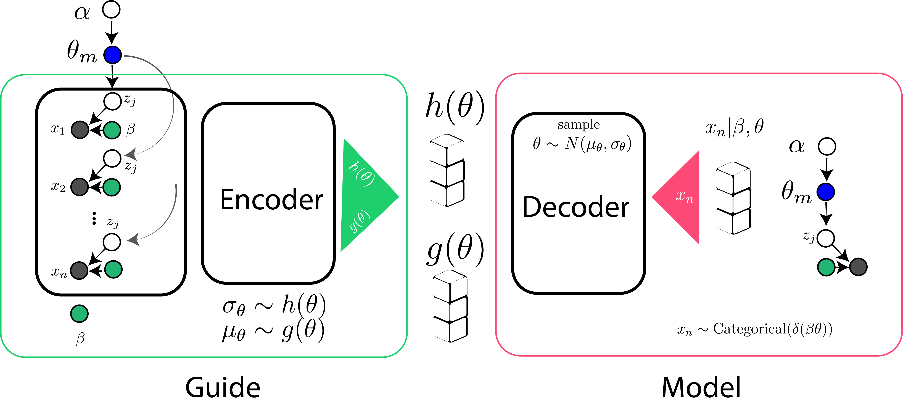

Write your first stochastic function in Python
Let’s estimate how many ice creams insomnia cookies in New Haven will sell this Fall. Several variables impact our forecasting, including weather and temperature. This blog post will review some essential functionalities and tutorials that pyro. Ai provides and then writes our first stochastic function for this problem.
Let’s get back to our example; a simple stochastic function that describes weather could be $\text{Bernoulli}(\alpha)$. Our prior belief on how likely a day to be cloudy is $\frac{3}{10}$, and we want to generate a sample using torch’s internal distribution library as follows:
|
|
Therefore, the variable cloudy is either $1$ or $0$.To sample temperature, let’s define other variables that depend on it. According to our experience during college at Yale, New Haven on cloudy days is around $55^o$ Fahrenheit, and on sunny days it is $75^o$ Fahrenheit. We believe these numbers can increase/decrease up to $10$ and $15$ standard deviations concerning means:
|
|
Now, we can define our stochastic function to forecast temperature with the following:
|
|
pyro helps use the basic functionality of pytorhch’s huge pool of libraries and enables us to infer possible hidden variables. Let’s wrap up all the code we wrote so far in pyro:
|
|
As you see, it’s similar to what we wrote in PyTorch. A sample output could be (‘cloudy,’ 64.544) (‘sunny’, 94.375) (‘sunny’, 72.518). Building off of this model is self-explanatory:
|
|
We expect to sell more ice creams in sunny and warm temperatures.
Introduction to Inference
Here, we will give a simple example of inference functions in statistics and introduce pyro basics to work. Then, I will include the model and guide functions to discuss and shed light on all aspects of variational inference.
Example 1: Weight Measurement
We have a remarkable ability to guess how much an object weighs by only watching them. We believe in our knowledge of some characteristics and materials of the thing rather than supernatural power. But, our scale could be more reliable, and we get slightly different values every time. We want to measure again and again to compensate for this error:
$$ \text{weight} | \text{guess} \sim \text{Normal}(\mu,\sigma)$$
$$\text{measurement} | \text{guess,weight} \sim \text{Normal}(\text{weight},0.75) $$
We can define a simple stochastic function for this phenomenon by sampling via a normal distribution and appropriate mean (the scale which is also dependent on our guess) and standard deviations:
|
|
And pyro is going to help us to infer the latent variable weight:
$$ (\text{weight} |\text{guess}, \text{measurement}=9.5) \propto f(x) $$
and also provides notation obs=. for conditions and observations:
|
|
It behaves exactly analogous to:
|
|
The code means we want to sample according to a normal distribution conditioned on our initial guess and measurement=$9.5$.
However, it can sometimes be more straightforward to infer the hidden variable than here. Sometimes, integration over the measurements is intractable (i.e., $p(z|x) = \frac{p(x,z)}{\int dz p(x,z)}$). We will approximate the posterior using a similar function to our model, named guide. Input variables for these functions are always the same. The model has data and our observations, but guide doesn’t and is the ultimate distribution we want to learn.
|
|
Once we run this code for enough iterations, we can say that we approximated our hidden parameters $a$ and $b$, which are necessary to approximate our posterior. Sample outputs could be (a=9.206, b=0.605).
Example 2: Fair Two-sided Coin
To be completed ..
Example 3: Topic Modeling
Topic modeling is a powerful technique to assign appropriate distributions to words and documents. David Blei (Columbia University, JMLR 2003) proposed Dirichlet distribution prior to generating words within a document and offered variational inference to obtain the hyperparameters. However, people used Markov Chain Monte Carlo (MCMC), specifically Gibbs Sampling, to approximate the parameters. While MCMC approximates the exact solution, it is prolonged. Akash Srivastava et al. (from the University of Edinburgh, ICLR 2017) introduced variational autoencoders as a novel approach for topic models. AutoEncoder captures non-linearity where other methods like PCA don’t. Yet, it needs to have regularity and may lead to overfitting. In other words, it doesn’t capture the structure of your data. Variational AE also captures the structure of your data by guiding your model to generate reliable samples. You can quickly learn variational AE using a graphical processing unit (GPU) over millions of documents.

Using the same principles, we learned that we could write advanced posterior inference models like topic modeling for’ model’ and’ guide.’ Implementing a topic modeling algorithm using model and guide is here: code.